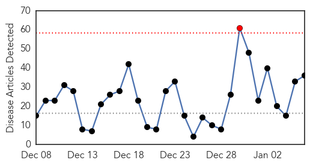
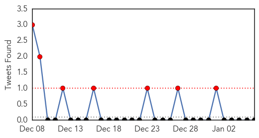
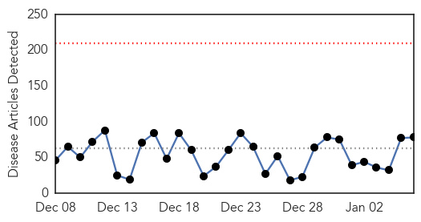
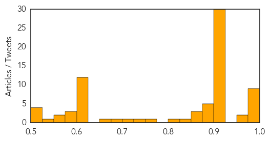

Influenza
30-Day Web Trend
1 alerts, 0 warnings

30-Day Twitter Trend
7 alerts, 0 warnings

Article Locations

Article Confidences

Top Articles:
- 1.000
- Influenza season strikes early and hard
- 0.999
- Flu spreads statewide, officials recommend getting vaccines
- 0.999
- Greene County flu epidemic won't let up
- 0.999
- Tennessee one of ‘high intensity’ states for flu
- 0.999
- One confirmed case in Windsor leads to influenza alert
- 0.998
- Louisiana flu season 'terrible' so far
- 0.998
- Green Bay among sickest places in nation right now
- 0.998
- Visitation restricted at 2 institutions due to influenza
- 0.998
- Flu Continues to Ramp Up Across Minnesota
- 0.998
- Flu cases on the rise
- 0.997
- What you need to know about the flu
- 0.996
- Flu season takes another turn for the worse
- 0.996
- Officials urges steps to prevent spread of flu - The Inter-Mountain
- 0.995
- Hunterdon Medical Center implements visitor restriction for patients during flu season
- 0.995
- Influenza activity in Boone County higher than last year
- 0.993
- Flu widespread in Idaho, school nurses take notice
- 0.993
- Flu kills 8 in Utah — How you can stop the virus from spreading
- 0.991
- The Facts, Not Fear, of the Flu
- 0.991
- Flu is now widespread in Maryland and doctors say it could get worse
- 0.984
- First flu death of season reported in Oakland County
- 0.977
- Facebook app uses friends' posts to monitor flu activity - KTRE.com
- 0.971
- Dorchester man with underlying conditions dies of flu
- 0.966
- Widespread flu epidemic reported in Morgan County
- 0.965
- Treatment for flu-like symptoms more than doubled from last winter across Alabama, ADPH says
- 0.958
- Kent County flu cases already double last year's total; virus 'widespread' in Michigan
- 0.949
- Flu testing in full swing at State Hygienic Lab
- 0.936
- 31 Winnipeg nursing homes hit hard by flu
- 0.908
- Fox Valley hospitals asking visitors to limit visits due to flu outbreak
- 0.903
- Bluefield Daily Telegraph: Local News
- 0.838
- Officials Urge Residents To Receive Flu Shots
- 0.832
- Zostavax (Zoster Virus Vaccine Live , Refrigerator Stable.) Drug
- 0.800
- Flu victim 'fought hard,' family says
- 0.776
- Sun A Powerful Ally In Fight Against Flu Season « CBS Sacramento
- 0.742
- Health department offering free flu shots
- 0.556
- More bird-flu cases in Washington State
- 0.528
- Holidays over, returning students hope to avoid flu bug
Top Tweets:
-
No tweets found for Jan 06, 2015
Unknown
30-Day Web Trend
0 alerts, 0 warnings

30-Day Twitter Trend
0 alerts, 0 warnings

Article Locations

Article Confidences
Top Articles:
- 0.999
- NC flu update comes as cases spread
- 0.998
- CDC: Flu season continues to worsen, could peak this month
- 0.996
- The flu is getting worse
- 0.996
- Athens hospitals offer tips for avoiding, handling the flu
- 0.995
- Flu cases continue to increase in North Carolina
- 0.992
- Think you have the flu? Here's when to see a doctor
- 0.990
- Flu season expected to peak this month
- 0.987
- Flu cases continue to rise locally, statewide
- 0.983
- Hospital ER flooded with flu patients, statewide deaths rising
- 0.952
- Hunterdon Medical Center restricting children from visiting patients during flu season
- 0.951
- Let’s just make the flu illegal!
- 0.922
- Flu not widespread in Oregon; worst may be yet to come
- 0.917
- Chicago Tribune
- 0.917
- Chicago Tribune
- 0.917
- Chicago Tribune
- 0.917
- Chicago Tribune
- 0.917
- Chicago Tribune
- 0.917
- Chicago Tribune
- 0.917
- Chicago Tribune
- 0.917
- Chicago Tribune
- 0.917
- Chicago Tribune
- 0.917
- Chicago Tribune
- 0.917
- Chicago Tribune
- 0.917
- Chicago Tribune
- 0.917
- Chicago Tribune
- 0.917
- Chicago Tribune
- 0.917
- Chicago Tribune
- 0.917
- Chicago Tribune
- 0.917
- Chicago Tribune
- 0.917
- Chicago Tribune
- 0.917
- Chicago Tribune
- 0.917
- Chicago Tribune
- 0.917
- Chicago Tribune
- 0.917
- Chicago Tribune
- 0.917
- Chicago Tribune
- 0.917
- Chicago Tribune
- 0.910
- The world windows to Thailand
- 0.910
- The world windows to Thailand
- 0.906
- Flu labeled as 'widespread' in Connecticut
- 0.905
- West Virginia education, health officials stress importance of flu shots for students
- 0.902
- New York City Mandates Flu Shots for Toddlers Even After Centers for Disease Control (CDC) Admits They Don’t Work
- 0.896
- Samar health authorities raise alert after suspected meningococcemia kills 2
- 0.887
- Schools Prepare for Flu Spike as Kids Come Back to School
- 0.884
- Flu in American Samoa hits schools
- 0.882
- Flu activity rampant nationwide
- 0.878
- Flu hits East Tennessee hard, Knoxville among sickest cities in the nation
- 0.875
- Doctors Urge Parents: Keep Sick Kids at Home
- 0.866
- Hamas denies leader has been expelled from Qatar
- 0.861
- Flu Numbers on the Rise in Central Illinois - Story
- 0.833
- Flu most intense in years
Showing top 50 articles...
Top Tweets:
-
No tweets found for Jan 06, 2015